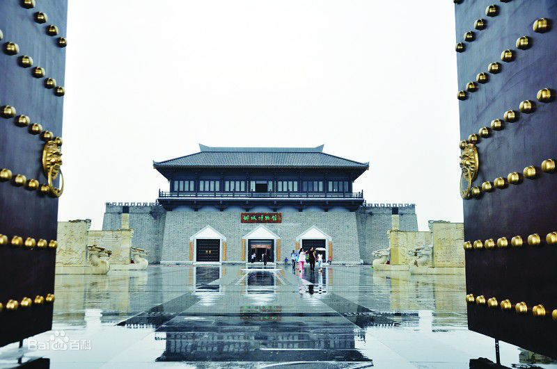
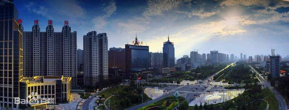

当前位置：首页->历史文化
历史
- 名字的由来
- 说法一：邯郸在战国以前写作甘丹。有学者认为太阳出升过地平线叫甘，太阳落山过地平线叫丹。邯郸即日出日落之地。
- 说法二：邯郸地名可能由姓氏而取名。过去是有邯郸这个姓氏的，邯郸是一个复姓。
- 说法三：《汉书·地理志》中魏国张晏提出：“邯郸山，在东城下，单，尽也，城廓从邑，故加邑云。”意思是说，邯郸的地名源于邯郸山，在邯郸的东城下有一座山名叫邯山，单是山脉的尽头，邯山至此而尽，因此得名邯单。
- 先秦时期
- 上古时期人类始祖女娲就在涉县古中皇山(娲皇宫)抟土造人、炼石补天。
- 8000多年前，新石器早期的磁山先民就在这里繁衍生息，开启农业文明的新纪元。磁山文化早于仰韶文化1000年，是世界上粟、家鸡的最早发现地。把我国黄河流域种植粟的记录提前至距今一万年，填补了前仰韶文化的空白，修正了世界农业史对种植粟年代的认识。
- 邯郸城邑，肇起于殷商。商代建都于邢（邢台），迁都于殷（今安阳）的数百年间，邯郸为畿辅之地。《竹书纪年》中，就有商末在邯郸建离宫别馆的记载，证实邯郸城至少已有3100年的建城历史。公元前386年赵敬侯迁都于邯郸，赵武灵王实行胡服骑射的军事改革，使赵国成为战国七雄之一。公元前430年，魏文侯把魏都城从安邑迁都洹水,今魏县旧魏县村并以邺城（今临漳）为陪都[21] 。
- 战国时期，邯郸作为赵国都城达158年之久，是我国北方的政治、经济、文化中心。
- 秦汉时期
- 秦朝，秦始皇将全国分为三十六郡，邯郸是邯郸郡的首府。西汉，邯郸城有“富冠海内，天下名都”之称，除国都长安之外，与洛阳、临淄、成都、宛（南阳）齐享五大都会盛名。
- 东汉，曹操于邺城（临漳古称邺，西晋为避愍帝司马邺讳，因邺城北临漳河而易名临漳建都。魏都的营建，以中轴为对称法则著称于世，并修建了铜雀台、金凤、冰井三台。西晋左思所作《魏都赋》，正是描写临漳邺城此时的繁华景象。
- 邺城（今临漳）的兴起导致黄河以北的政治、经济、军事、文化中心南移继而先后为后赵、冉魏、前燕、东魏、北齐的国都，前后历时364年，对于后世产生了极为深远的影响。邺城是古代都城规划建设肇始地、建安文学发祥地、鬼谷子诞生地、西门豹治邺惠民地

- 唐宋至明清
- 隋唐，隋末窦建德把广府作为夏的都城，这是中国历史上仅有的两个农民起义军政权建立的都城之一。大名在唐五代时兴起。公元621年，魏州首府大名已成为黄河以北中心城市。公元923年，李存勖在大名登上了皇帝宝座，史称后唐庄宗。
- 宋代，大名为河北路治所（省府）。公元1042年建大名为陪都，称北京大名府。金朝，大名为大齐的都城。当时大名府人口多达百余万，后来被淹没，现在的宋城完整地保留在4米之下的黄河河沙之中，将来一旦出土，会宛如意大利庞贝古城一样震撼。
- 明代，邯郸县属北直隶省广平府。清朝因袭明制称直隶省，大名府曾为直隶总督所在地。邯郸县仍属广平府管辖。明清时期邯郸一带的政治、经济中心是在广平府城。民国初，邯郸县属直隶省冀南道，1928年，直隶省改为河北省，邯郸直归省辖。
- 近现代
- 解放战争时期，涉县是八路军一二九师司令部和晋冀鲁豫边区政府所在地。刘伯承、邓小平率八路军129师转战千里太行，创建了晋冀鲁豫解放区。《人民日报》在此创刊，中央人民广播电台前身华北新华广播电台在邯郸诞生。
- 1945年10月5日邯郸城解放，直属晋冀鲁豫边区政府。
- 1949年8月河北省人民政府成立，设立了邯郸专区。
- 1952年12月22日，邯郸镇复升为邯郸市。1954年改省辖市。1956年地级峰峰市并入邯郸市。1983年邯郸县并入邯郸市。
- 1984年成为省辖市，1986年武安县(后改市)划归邯郸市。
- 1993年经国务院批准，撤消邯郸地区，实行地市合并，将邯郸地区所辖各县划归邯郸市管辖，称邯郸市。
- 2016年，《国务院关于同意河北省调整邯郸市部分行政区划的批复》（国函〔2016〕157号）：一、同意撤销肥乡县，设立邯郸市肥乡区，以原肥乡县的行政区域为肥乡区的行政区域，肥乡区人民政府驻肥乡镇广安东路1号。二、同意撤销永年县，设立邯郸市永年区，以原永年县的行政区域（不含南沿村镇、小西堡乡、姚寨乡）为永年区的行政区域，永年区人民政府驻临洺关镇洺洲大道25号。三、同意撤销邯郸县，将原邯郸县的河沙镇镇、南堡乡、代召乡划归邯郸市邯山区管辖，将原邯郸县的尚璧镇、南吕固乡、兼庄乡、三陵乡划归邯郸市丛台区管辖。四、同意将磁县的高臾镇、光禄镇、辛庄营乡、花官营乡、台城乡划归邯郸市邯山区管辖，将磁县的林坛镇、南城乡划归邯郸市复兴区管辖，将原永年县的南沿村镇、小西堡乡、姚寨乡划归邯郸市丛台区管辖

文化
邯郸是中华文化重要的发祥地之一，8000年前，就有人类繁衍生息，孕育了新石器早期的磁山文化。赵文化、女娲文化、北齐石窟文化、建安文化、广府太极文化、梦文化、磁州窑文化、成语典故文化、边区革命文化等，博大精深，风格丰富多彩。刘邓大军诞生地和晋冀鲁豫边区政府所在地。中央人民广播电台的前身华北新华广播电台在邯郸开播，《人民日报》、《人民画报》在邯郸创刊，中国人民银行前身之一的冀南银行在邯郸诞生。邯郸还是中国成语典故之都、太极之乡、指南针的故乡、五大祭祖圣地之一（娲皇宫）。
- 成语
- 漫步在邯郸的街头巷尾，随处都能见到成语典故，邯郸学步雕塑（学步桥）、胡服骑射雕塑、荀子雕塑、罗敷雕塑、武灵丛台、七贤祠、回车巷、插箭岭等等。
- 主要成语有：负荆请罪、完璧归赵、价值连城、将相和、刎颈之交、围魏救赵、梅开二度、退避三舍、毛遂自荐、纸上谈兵、不射之射、邯郸学步、胡服骑射、铜雀春深、宁可玉碎，不能瓦全、绝妙好词、黄粱美梦、冬日之日、夏日之日、前事不忘，后事之师、奉公守法、奇货可居、南辕北辙、河伯娶妻、挟天子以令诸侯、下笔成章、路不拾遗、诗文判状、窃符救赵、步履蹒跚.、三寸之舌、惊弓之鸟、旷日持久、不遗余力、舍本逐末、罗敷采桑、智者千虑等。